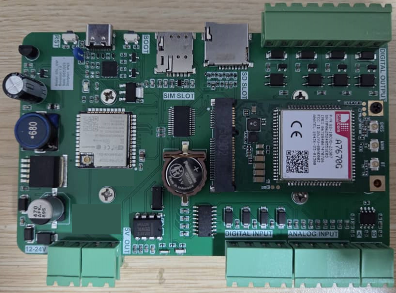
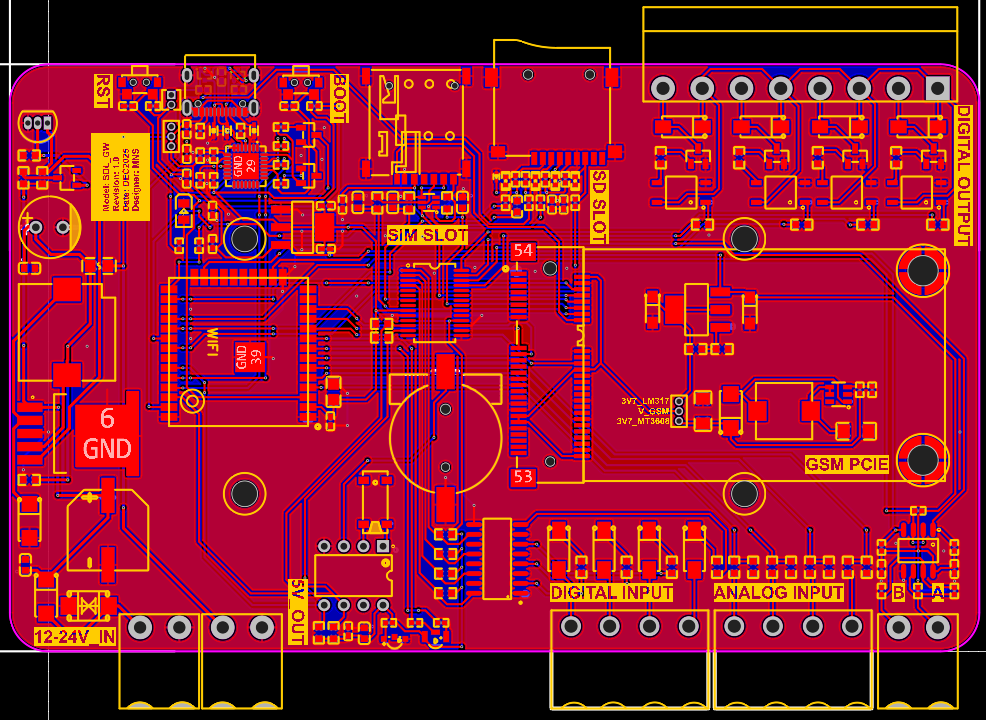
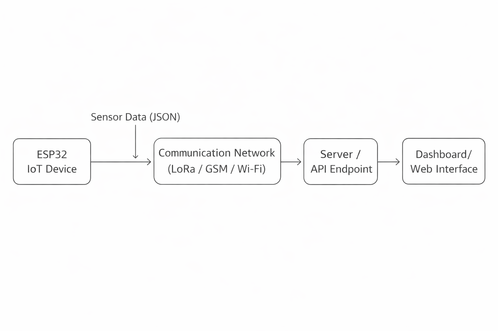

Smart IoT Datalogger
A proof-of-concept ESP32 modular datalogger demonstrating end-to-end IoT system development, from embedded hardware to cloud data handling.
Reliable field data acquisition.
The system targets scenarios where sensor data must be collected, stored locally, and transmitted wirelessly for monitoring and analysis.
- Flexible embedded platform based on ESP32.
- Local data logging with remote transmission options.
- Structured firmware design for real-world IoT behavior.
- Hardware, power, and communication trade-off exploration.


Layered system design.
The datalogger separates sensing, processing, storage, communication, and backend components to simplify debugging and future extension.

Flexible controller and interfaces.
The ESP32 was selected for integrated Wi-Fi, multiple peripheral interfaces, community support, and enough processing capability for polling, logging, and communication handling.
- Analog and digital inputs for transducers, switches, and status signals.
- I2C, UART, SPI, and RS-485 Modbus RTU interface options.
- Digital outputs for basic control actions and external triggering.


Backend-ready telemetry.
The communication design focuses on reliability, simplicity, and flexible deployment. Only one communication method is active per configuration to reduce complexity and power consumption.
- LoRa for long-range, low-power remote deployments.
- GSM where local infrastructure is unavailable.
- Wi-Fi for development, testing, or local deployment.
- HTTP POST and MQTT for server or near-real-time monitoring workflows.



Strong foundations before scale.
This project reinforced the value of reliable foundations before optimizing for performance or scalability in IoT applications.